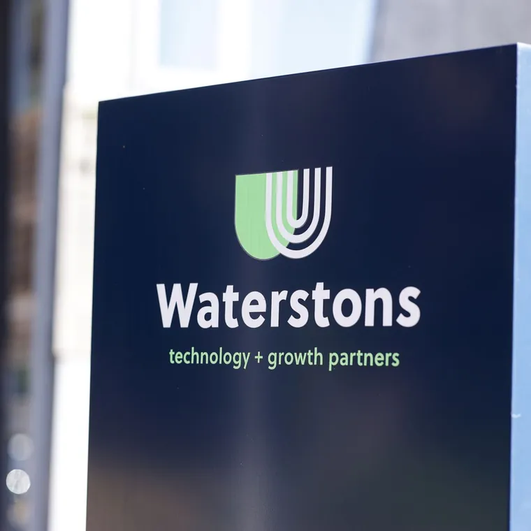
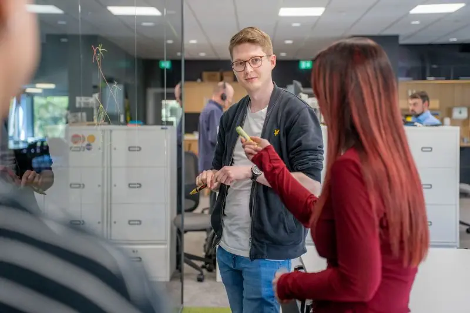
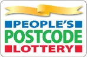
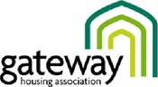

Story
Founded as a family business. Still behaves like one.
We have been around since the mid nineties, and that sense of family still runs through the place. Our ethos fits in five words: we will do whatever it takes.
114 of 114 ISO 27001 controls met in full for People's Postcode Lottery, not the subset the regulator requires.


We are a family business that helps ambitious organisations with advisory, technology, data and AI and cyber. Thirty years on, still mucking in.
Our people make us different. Yeah, we know, everyone says that.


Founded as a family business. Still behaves like one.
We have been around since the mid nineties, and that sense of family still runs through the place. Our ethos fits in five words: we will do whatever it takes.
If none of our roles fit, still say hello.
We hire for the person, not the checklist. Tell us what you are good at and we will tell you honestly whether we have somewhere for it.
We're with you.
Tell us what is on your mind and you will hear back from someone who knows the subject, not a sales sequence.
Indicative search design. Results are grouped by type and filtered by sector, service and format.